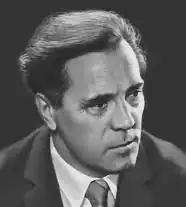
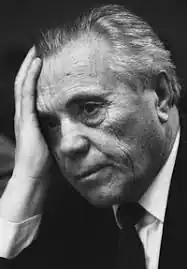
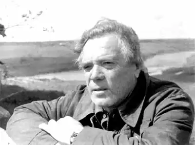

(1.05.1924 — 29.11.2001)
1 травня 1924 року в селі Вівсянка, що на березі Єнісею, недалеко від Красноярська, в сім'ї Петра Павловича і Лідії Іллівни Астаф'єва народився син Віктор.
У сім років хлопчик втратив матір — вона потонула в річці, зачепившись косою за основу бони. В. П. Астаф'єв ніколи не звикне до цієї втрати. Все йому "не віриться, що мами немає і ніколи не буде". Заступницею і годувальницею хлопчика стає його бабуся — Катерина Петрівна. З батьком і мачухою Віктор переїжджає в Ігарка — сюди висланий з родиною розкуркулених дід Павло. "Диких заробітків", на які розраховував батько, не виявилося, відносини з мачухою не склалися, вона зіштовхує тягар в особі дитини з плечей. Хлопчик позбавляється даху і засобів до існування, бродяжать, потім потрапляє в детдом— інтернат. "Самостійне життя я почав відразу, без будь-якої підготовки", — напише згодом В. П. Астаф'єв. Учитель школи-інтернату сибірський поет Ігнатій Дмитрович Різдвяний зауважує в Вікторі схильність до літератури і розвиває її. Твір про улюбленому озері, надруковане в шкільному журналі, розгорнеться пізніше в розповідь "Васюткино озеро". Закінчивши школу-інтернат, підліток заробляє собі на хліб в верстаті Курейка. "Дитинство моє залишилося в далекому Заполяр'ї, — напише через роки В. П. Астаф'єв. — Дитя, за висловом діда Павла, "не рожено, не прошу, татом з мамою кинуто", теж кудись поділося, точніше — одкотилося від мене. Чужий собі і всім, підліток або юнак вступав у доросле трудове життя воєнної доби ". Зібравши грошей на квиток. Віктор їде до Красноярськ, надходить і ФЗО. "Групу і професію в ФЗО я не вибирав — вони самі мене обрали", розповість згодом письменник. Закінчивши навчання, він працює упорядником поїздів на станції Базаиха під Красноярськом. Восени 1942 року Віктор Астаф'єв добровольцем йде в армію, а навесні 1943 року потрапляє на фронт. Воює на Брянському. Воронезькому і Степовому фронтах, які об'єдналися потім в Перший Український. Фронтова біографія солдата Астаф'єва відзначена орденом Червоної Зірки, медалями "За відвагу", "За перемогу над Німеччиною" та "За визволення Польщі". Кілька разів він був важко поранений. Восени 1945 року В. П. Астаф'єв демобілізувався з армії н разом зі своєю дружиною — рядовий Марією Семенівною Корякиной приїжджає па її батьківщину — місто Чусовой на західному Уралі. За станом здоров'я Віктор вже не може повернутися до своєї спеціальності і, щоб годувати сім'ю, працює слюсарем, чорноробом, вантажником, теслярем, мийником м'ясних туш, вахтером м'ясокомбінату. У березні 1947 року в молодій сім'ї народилася донька. На початку вересня дівчинка померла від важкої диспепсії, — час був голодний, у матері не вистачало молока, а продовольчих карток взяти не було звідки. У травні 1948 року біля Астаф'єва народилася дочка Ірина, а в березні 1950 року — син Андрій. У 1951 році, потрапивши якось на заняття літературного гуртка при газеті "Чусовской робочий", Віктор Петрович за одну ніч написав оповідання "Цивільний чоловік"; згодом він назве його "Сибіряк". З 1951 але 1955 рік Астаф'єв працює літературним співробітником газети "Чусовской робочий. У 1953 році в Пермі виходить його перша книжка оповідань — "До майбутньої весни", а в 1955 році друга — "Вогники". Це розповіді для дітей. У 1955-1957 роках він пише роман "Тануть сніги", видає ще дві книги для дітей: "Васюткино озеро" (1956) і "Дядя Кузя, кури, лисиця і кіт" (1957), друкує нариси і розповіді в альманасі "Прикамье ", журналі" Смена ", збірниках" Мисливські були "і" Прикмети часу ". З квітня 1957 року Астаф'єв — спецкор Пермського обласного радіо. У 1958 році побачив світ його роман "Тануть сніги". В. П. Астаф'єва приймають до Спілки письменників РРФСР. У 1959 році його направляють на Вищі літературні курси при Літературному інституті імені М. Горького. Два роки він вчиться в Москві. Кінець 50-х років відзначений розквітом ліричної прози В. П. Астаф'єва. Повісті "Перевал" (1958-1959) і "Стародуб" (1960), повість "Зорепад", написана на одному диханні всього за кілька днів (1960), приносять йому широку популярність. У 1962 році сім'я переїхала до Пермі, а в 1969 році — до Вологди. 60-ті роки надзвичайно плідні для письменника: написана повість "Крадіжка" (1961-1965), новели, що склали згодом повість в оповіданнях "Останній уклін": "Зорькін пісня" (1960), "Гуси в ополонці" (1961), " запах сіна "(1963)," Дерева ростуть для усіх "(1964)," Дядя Філіп — судновий механік "(1965)," Чернець в нових штанях "(1966)," Осінні смутку і радості "(1966)," Ніч темная— темна "(1967)," Останній уклін "(1967)," Десь гримить війна "(1967)," Фотографія, на якій мене немає "(1968)," Бабусин свято "(1968). У 1968 році повість "Останній уклін" виходить в Пермі окремою книгою. У вологодський період життя В. П. Астаф'єва створені дві п'єси: "Черемуха" і "Прости мене". Вистави, поставлені за цими п'єсами, йшли па сцені ряду російських театрів. Ще в 1954 році Астаф'єв задумав повість "Пастух і пастушка. Сучасна пастораль "-" улюблене своє дітище ". А здійснив свій задум майже через 15 років — в три дня, "абсолютно очманілий і щасливий", написавши "чернетка в сто двадцять сторінок" і потім шліфуючи текст. Написана в 1967 році, повість важко проходила у пресі і вперше була опублікована в журналі "Наш сучасник", № 8, 1971 p Письменник повертався до тексту повісті в 1971 і 1989 роках, відновивши зняте з міркувань цензури. У 1975 році за повістю "Перевал", "Останній уклін", "Крадіжка", "Пастух і пастушка" В. П. Астаф'єву була присуджена Державна премія РРФСР імені М. Горького. У 60-ті ж роки B. П. Астаф'єва були написані оповідання "Стара кінь" (1960), "Про що ти плачеш, ялина" (1961). "Руки дружини" (1961), "Сашка Лебедєв" (1961), "Тривожний сон" (1964), "Індія" (1965), "Митяй з землечерпалки" (1967), "Яшка-лось" (1967), " сині сутінки "(1967)," Бери та пам'ятай "(1967)," Ясним чи днем "(1967)," Русский алмаз "(1968)," Без останнього "(1968). До 1965 року почав складатися цикл Затес — ліричних мініатюр, роздумів про життя, заміток для себе. Вони друкуються в центральних і периферійних журналах. У 1972 році "Затеси" виходять окремою книжкою у видавництві "Радянський письменник" — "Сільська пригода". "Песнопевіца", "Як лікували богиню", "Зірки і ялинки", "Тура", "Рідні берези", "Весняний острів", "Хлебозари", "Щоб біль кожного ...", "Кладовище", "І прахом своїм ". "Домський собор", "Бачення", "Ягідка", "Зітхання". До жанру Затес письменник постійно звертається у своїй творчості. У 1972 році В. П. Астаф'єв пише своє "радісне дітище" — "Оду російській городу". З 1973 року в пресі з'являються розповіді, які становлять згодом знамените оповідання в оповіданнях "Цар-риба": "Бойє", "Крапля", "У золотий карги", "Рибак гуркотіли", "Цар-риба", "Летить чорне перо" , "Юшка на Боганиде", "Поминки", "Туруханський лілія", "Сон про білих горах", "Ні мені відповіді". Публікація глав в періодиці — журналі "Наш сучасник" — йшла з такими втратами в тексті, що автор від прикрощів зліг у лікарню і з тих нір більше ніколи не повертався до повісті, які не відновлював і не робив нових редакцій. Лише через багато років, виявивши в своєму архіві пожовклі від часу сторінки знятої цензурою голови "Норільци", опублікував її в 1990 році в тому ж журналі під назвою "Не вистачає серця". Вперше "Цар-риба" була опублікована в книзі "Хлопчик у білій сорочці", що вийшла у видавництві "Молода гвардія" в 1977 році. У 1978 році за оповідання в оповіданнях "Цар-риба" В. П. Астаф'єв був удостоєний Державної премії СРСР. У 70-ті роки письменник знову звертається до теми свого дитинства — народжуються нові глави до "Останньому поклоні": опубліковані "Бенкет після перемоги" (1974), "Бурундук на хресті" (1974), "Карасін смерть" (1974), " без притулку "(1974)," Сорока "(1978)," Приворотне зілля "(1978)," гори, гори ясно "(1978)," Соєві цукерки "(1978). Повість про дитинство — вже в двох книгах — виходить в 1978 році у видавництві "Сучасник". З 1978 по 1982 рік В. П. Астаф'єв працює над повістю "Видючий посох", виданій тільки в 1988 році. У 1991 році за цю повість письменник був удостоєний Державної премії СРСР. У 1980 році Астаф'єв переїхав жити на батьківщину — в Красноярськ. Почався новий, надзвичайно плідний період його творчості. У Красноярську і в Овсянці — селі його дитинства — ним написані роман "Сумний детектив" (1985) і такі розповіді, як "Ведмежа кров" (1984), "Життя прожити" (1985), "Вімбо" (1985), "Кінець світу "(1986)," Сліпий рибалка "(1986)," Ловля піскарів в Грузії "(1986)," Тільняшка з Тихого океану "(1986)," Блакитне поле під блакитними небесами "(1987)," Посмішка вовчиці "(1989 ), "Мною народжений" (1989), "Людочка" (1989), "Розмова зі старим рушницею" (1997). У 1989 році В. П. Астаф'єву присвоєно звання Героя Соціалістичної Праці. 17 серпня 1987 року раптово помирає донька Астаф'єва Ірина. Її привозять з Вологди і ховають на кладовищі в Овсянці. Віктор Петрович і Марія Семенівна забирають до себе маленьких онуків Вітю і Полю. Життя на батьківщині розбурхала спогади і подарувала читачам нові розповіді про дитинство — народжуються глави: "Передчуття льодоходу", "зберігає", "Стряпухіна радість", "Пеструха", "Легенда про скляній глечику", "Смерть", і в 1989 році " Останній уклін "виходить у видавництві" Молода гвардія "вже в трьох книгах. У 1992 році з'являються ще два розділи — "забубенной голівонька" і "Вечірні роздуми". "Животворящий світло дитинства" зажадав від письменника понад тридцять років творчої праці. На батьківщині В. П. Астаф'єва створена і його головна книга про війну — роман "Прокляті та вбиті": частина перша "Чортова яма" (1990-1992) і частина друга "Плацдарм" (1992-1994), що відняла у письменника чимало сил і здоров'я і викликала бурхливу читацьку полеміку. У 1994 році "за видатний внесок у вітчизняну літературу" письменникові була присуджена Російська незалежна премія "Тріумф". У 1995 році за роман "Прокляті та вбиті" В. П. Астаф'єв був удостоєний Державної премії Росії. З вересня 1994 по січень 1995 го майстер слова працює над новою повістю про війну "Так хочеться жити", а в 1995-1996 роках пише — теж "військову" — повість "Обертон", в 1997 році він завершує повість "Веселий солдат ", розпочату в 1987 році, — війна не залишає письменника, тривожить пам'ять. Веселий солдат — це він, поранений молодий солдат Астаф'єв, який повертається з фронту і примірявся до мирного цивільного життя. У 1997-1998 роках в Красноярську здійснено видання Зібрання творів В. П. Астаф'єва в 15 томах, з докладними коментарями автора. У 1997 році письменникові присуджено Міжнародну Пушкінська премія, а в 1998 році він удостоєний премії "За честь і гідність таланту" Міжнародного літфонду. В кінці 1998 року В. П. Астаф'єву присуджена премія імені Аполлона Григор'єва Академії російської сучасної словесності. "Ні дня без рядка" — це девіз невтомного трудівника, істинно народного письменника. Ось і зараз на його столі — нові Затеси, улюблений жанр — і нові задуми в серці.